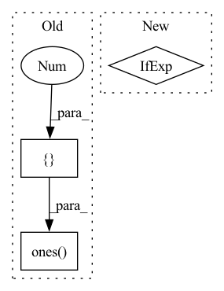

Pattern ID :3638

Before Change
fig, axes = plt.subplots(1, 3, figsize=(base_size * 3, base_size * 1))
axes[0].imshow(self.pos_emb_h)
axes[1].imshow(self.pos_emb_w)
hh_sum = tf.ones([1, self.pos_emb_h.shape[0]]) @ self.pos_emb_h
ww_sum = tf.ones([1, self.pos_emb_w.shape[0]]) @ self.pos_emb_w
axes[2].imshow(tf.transpose(hh_sum) + ww_sum)
titles = ["pos_emb_h", "pos_emb_w", "sum"]
After Change
import matplotlib.pyplot as plt
pos_emb_h = self.pos_emb_h.detach().numpy() if hasattr(self.pos_emb_h, "detach") else self.pos_emb_h.numpy()
pos_emb_w = self.pos_emb_w.detach().numpy() if hasattr(self.pos_emb_w, "detach") else self.pos_emb_w.numpy()
fig, axes = plt.subplots(1, 3, figsize=(base_size * 3, base_size * 1))
axes[0].imshow(pos_emb_h)
In pattern: SUPERPATTERN
Frequency: 3
Non-data size: 3
Instances
Fragment ID: 13666354
Project Name: leondgarse/keras_cv_attention_models
Commit Name: e05e233f369a1d58f912872b1581a80d15cacc3f
Time: 2023-02-07
Author: leondgarse@gmail.com
File Name: keras_cv_attention_models/botnet/botnet.py
M Class Name: RelativePositionalEmbedding
N Class Name: RelativePositionalEmbedding
M Method Name: show_pos_emb(2)
N Method Name: show_pos_emb(2)
M Parent Class: layers.Layer
N Parent Class: keras.layers.Layer
M File Name: keras_cv_attention_models/botnet/botnet.py
N File Name: keras_cv_attention_models/botnet/botnet.py
M Start Line: 132
M End Line: 135
N Start Line: 129
N End Line: 136
'>
Before Change
def test_sbiobert_embedding(self, monkeypatch, fake_sqlalchemy_engine, test_parameters, metadata_path):
torch_model = MagicMock(spec=torch.nn.Module)
torch_model.return_value = (torch.ones([1, 8, 768]), torch.ones([1, 768]))
auto_model = Mock()
auto_model.from_pretrained().bert.to.return_value = torch_model
After Change
if n_sentences != 1:
dummy_sentence = n_sentences * [dummy_sentence]
preprocess_method = getattr(sbiobert, "preprocess" if n_sentences == 1 else "preprocess_many")
embed_method = getattr(sbiobert, "embed" if n_sentences == 1 else "embed_many")
preprocess_sentence = preprocess_method(dummy_sentence)
'>
Fragment ID: 13666355
Project Name: bluebrain/search
Commit Name: 6eb30c8b3e77791ee4e407dd19d7a5e08fe5e132
Time: 2020-09-04
Author: jankrepl@yahoo.com
File Name: tests/test_embedding_models.py
M Class Name: TestEmbeddingModels
N Class Name: TestEmbeddingModels
M Method Name: test_sbiobert_embedding(3)
N Method Name: test_sbiobert_embedding(5)
M Parent Class:
N Parent Class:
M File Name: tests/test_embedding_models.py
N File Name: tests/test_embedding_models.py
M Start Line: 36
M End Line: 69
N Start Line: 40
N End Line: 76
'>
Before Change
level_high = level_high.to(y_zero_point.device)
y_zero_point = min(max(level_low, (y_zero_point.to(torch.int8))), level_high)
else:
level_low = torch.ones([1]).to(torch.uint8) * level_low
level_high = torch.ones([1]).to(torch.uint8) * level_high
level_low = level_low.to(y_zero_point.device)
level_high = level_high.to(y_zero_point.device)
After Change
y_scale = (input_high - input_low) / (level_high - level_low)
y_zero_point = (level_low * input_high - level_high * input_low) / (input_high - input_low)
type_ = torch.int8 if level_low < 0 else torch.uint8
level_low *= torch.ones_like(y_zero_point).to(type_)
level_high *= torch.ones_like(y_zero_point).to(type_)
level_low = level_low.to(y_zero_point.device)
'>
Fragment ID: 13666357
Project Name: openvinotoolkit/nncf
Commit Name: 23610df53be6cb3c36a8f5ec6aaf7ab8f4fc757e
Time: 2020-11-06
Author: aleksei.kashapov@intel.com
File Name: nncf/quantization/quantize_functions.py
M Class Name: AnonimousClass
N Class Name: AnonimousClass
M Method Name: get_scale_zp_from_input_low_input_high(4)
N Method Name: get_scale_zp_from_input_low_input_high(4)
M Parent Class:
N Parent Class:
M File Name: nncf/quantization/quantize_functions.py
N File Name: nncf/quantization/quantize_functions.py
M Start Line: 154
M End Line: 169
N Start Line: 153
N End Line: 164